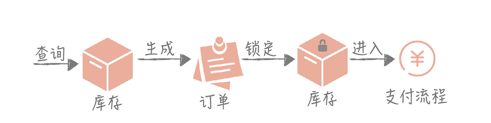
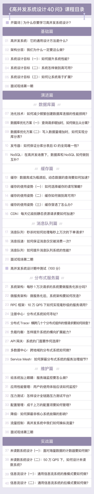

- 00 开篇词 为什么你要学习高并发系统设计？.md.html
- 01 高并发系统：它的通用设计方法是什么？.md.html
- 02 架构分层：我们为什么一定要这么做？.md.html
- 03 系统设计目标（一）：如何提升系统性能？.md.html
- 04 系统设计目标（二）：系统怎样做到高可用？.md.html
- 05 系统设计目标（三）：如何让系统易于扩展？.md.html
- 06 面试现场第一期：当问到组件实现原理时，面试官是在刁难你吗？.md.html
- 07 池化技术：如何减少频繁创建数据库连接的性能损耗？.md.html
- 08 数据库优化方案（一）：查询请求增加时，如何做主从分离？.md.html
- 09 数据库优化方案（二）：写入数据量增加时，如何实现分库分表？.md.html
- 10 发号器：如何保证分库分表后ID的全局唯一性？.md.html
- 11 NoSQL：在高并发场景下，数据库和NoSQL如何做到互补？.md.html
- 12 缓存：数据库成为瓶颈后，动态数据的查询要如何加速？.md.html
- 13 缓存的使用姿势（一）：如何选择缓存的读写策略？.md.html
- 14 缓存的使用姿势（二）：缓存如何做到高可用？.md.html
- 15 缓存的使用姿势（三）：缓存穿透了怎么办？.md.html
- 16 CDN：静态资源如何加速？.md.html
- 17 消息队列：秒杀时如何处理每秒上万次的下单请求？.md.html
- 18 消息投递：如何保证消息仅仅被消费一次？.md.html
- 19 消息队列：如何降低消息队列系统中消息的延迟？.md.html
- 20 面试现场第二期：当问到项目经历时，面试官究竟想要了解什么？.md.html
- 21 系统架构：每秒1万次请求的系统要做服务化拆分吗？.md.html
- 22 微服务架构：微服务化后，系统架构要如何改造？.md.html
- 23 RPC框架：10万QPS下如何实现毫秒级的服务调用？.md.html
- 24 注册中心：分布式系统如何寻址？.md.html
- 25 分布式Trace：横跨几十个分布式组件的慢请求要如何排查？.md.html
- 26 负载均衡：怎样提升系统的横向扩展能力？.md.html
- 27 API网关：系统的门面要如何做呢？.md.html
- 28 多机房部署：跨地域的分布式系统如何做？.md.html
- 29 Service Mesh：如何屏蔽服务化系统的服务治理细节？.md.html
- 30 给系统加上眼睛：服务端监控要怎么做？.md.html
- 31 应用性能管理：用户的使用体验应该如何监控？.md.html
- 32 压力测试：怎样设计全链路压力测试平台？.md.html
- 33 配置管理：成千上万的配置项要如何管理？.md.html
- 34 降级熔断：如何屏蔽非核心系统故障的影响？.md.html
- 35 流量控制：高并发系统中我们如何操纵流量？.md.html
- 36 面试现场第三期：你要如何准备一场技术面试呢？.md.html
- 37 计数系统设计（一）：面对海量数据的计数器要如何做？.md.html
- 38 计数系统设计（二）：50万QPS下如何设计未读数系统？.md.html
- 39 信息流设计（一）：通用信息流系统的推模式要如何做？.md.html
- 40 信息流设计（二）：通用信息流系统的拉模式要如何做？.md.html
- 加餐 数据的迁移应该如何做？.md.html
- 期中测试 10道高并发系统设计题目自测.md.html
- 用户故事 从“心”出发，我还有无数个可能.md.html
- 结束语 学不可以已.md.html
- 捐赠
00 开篇词 为什么你要学习高并发系统设计？
你好，我是唐扬，现在在美图公司任职技术专家，负责美图秀秀社区的研发、优化和运行维护工作。从业十年，我一直在从事社区系统研发、架构设计、系统优化的工作，期间参与研发过三个 DAU 过千万的大型高并发系统。在这三个项目中，我参与了业务系统的开发和改造，也参与和主导过像 RPC 框架、分布式消息系统、注册中心等中间件系统的研发，对于高并发系统设计的各个方面都有所涉猎。
我见证了系统从初期构建，到承接高并发大流量的全过程，并在其中积累了大量的系统演进经验。我认为，虽说每家公司所处的行业不同，业务场景不同，但是设计和优化的思想却是万变不离其宗。
这些经验是一个个的“小套路”，它们相互联系，形成一套指引我们进行高并发系统设计的知识体系，其中包括了理论知识的讲解、问题场景的介绍、问题分析的过程，以及解决问题的思路。当你掌握这些“套路”之后，就能明确地知道，系统处于某一个阶段时，可能会面临的问题，然后及时找到架构升级优化的思路解决这些问题，提升系统性能。
从今天起，我会在“极客时间”上分享这些“套路”，和你一起分析问题原因，探讨解决方案，让你学有所用！
为什么要学习高并发系统设计？
在解答“为什么要学习高并发系统设计”之前，我想让你思考几个问题：
- 在微博中，明星动辄拥有几千万甚至上亿的粉丝，你要怎么保证明星发布的内容让粉丝实时地看到呢？
- 淘宝双十一，当你和上万人一起抢购一件性价比超高的衣服时，怎么保证衣服不会超卖？
- 春运时我们都会去 12306 订购火车票，以前在抢票时经常遇到页面打不开的情况，那么如果你来设计 12306 系统，要如何保证在千万人访问的同时也能支持正常抢票呢？
这些问题是你在设计和实现高并发系统时经常会遇到的痛点问题，都涉及如何在高并发场景下做到高性能和高可用，掌握这些内容，你开发的产品可以为用户提供更好的使用体验，你的技术能力也能有一个质的变化。
高并发系统设计知识，是你获取大厂 Offer 必不可少的利器
不可否认的是，目前的经济形势不好，很多公司（比如阿里、腾讯、今日头条）一方面在减少招聘的人员数量，另一方面也期望花费了人力成本之后可以给公司带来更大的价值。那么对于公司来说，仅仅懂得 CRUD 的程序员就不如有高并发系统设计经验的程序员有吸引力了。
所以当你去面试时，面试官会要求你有高并发设计经验，有的面试官会询问你的系统在遭遇百万并发时可能有哪些瓶颈点，以及有什么优化思路等问题，为的就是检验你是否真的了解这方面的内容。
那么进不了大厂，没有高并发的场景，这些设计的经验又要从何处来呢？这就是鸡生蛋蛋生鸡的问题了。我能肯定的是，当你学习这门课程，掌握了这方面的技术之后，大厂的 Offer 将不再遥不可及。
不要囿于公司现有的业务场景，你的能力，绝不止于此
那你可能会说：“我在小公司工作，小公司的系统并发不高，流量也不大，学习高并发系统设计似乎有些多此一举。”但我想说的是，公司业务流量平稳，并不表示不会遇到一些高并发的需求场景。
就拿电商系统中的下单流程设计技术方案为例。在每秒只有一次调用的系统中，你只需要关注业务逻辑本身就好了：查询库存是否充足，如果充足，就可以到数据库中生成订单，成功后锁定库存，然后进入支付流程。

这个流程非常清晰，实现也简单，但如果要做一次秒杀的活动，配合一些运营的推广，你会发现下单操作的调用量可能达到每秒 10000 次！
10000 次请求同时查询库存，是否会把库存系统拖垮？如果请求全部通过，那么就要同时生成 10000 次订单，数据库能否抗住？如果抗不住，我们要如何做？这些问题都可能出现，并让之前的方案不再适用，此时你就需要设计新的方案。
除此之外，同样是缓存的使用，在低并发下你只需要了解基本的使用方式，但在高并发场景下你需要关注缓存命中率，如何应对缓存穿透，如何避免雪崩，如何解决缓存一致性等问题，这就增加了设计方案的复杂度，对设计者能力的要求也会更高。所以，为了避免遇到问题时手忙脚乱，你有必要提前储备足够多的高并发知识，从而具备随时应对可能出现的高并发需求场景的能力。
我身边有很多在小公司打拼闯荡，小有建树的朋友，他们无一不经历过低谷期，又一一开拓了一片天地，究其原因，是因为他们没有将目光放在现有的业务场景中，而是保持着对于新技术的好奇心，时刻关注业界新技术的实现原理，思考如何使用技术来解决业务上的问题。
他们虽然性格很不同，但不甘于现状，突破自己的信念却是一致的。我相信，你也一定如此。所以完成业务需求，解决产品问题不应该是你最终的目标，提升技术能力和技术视野才应是你始终不变的追求。
计算机领域里虽然知识点庞杂，但很多核心思想都是相通的
举个例子，消息队列是高并发系统中常见的一种组件，它可以将消息生产方和消费方解耦，减少突发流量对于系统的冲击。但如果你的系统没有那么高的流量，你就永远不会使用消息队列了吗？当然不是。
系统模块要做到高内聚、低解耦，这是系统的基本设计思想，和是否高并发无关，而消息队列作为主要的系统解耦方式，应该是你技术百宝囊中一件不可或缺的制胜法宝。
又比如，缓存技术蕴含的是空间换时间的思想；压缩体现的是时间换空间的思想；分布式思想也最初体现在 CPU 的设计和实现上……这些内容，都是高并发系统设计中的内容，而我希望在这个课程中，帮你把握这些核心思想，让你触类旁通，举一反三。
所以，高并发系统设计无论是对于初入职场的工程师了解基本系统设计思想，还是对于有一定工作经验的同学完善自身技能树，为未来可能遇见的系统问题做好技术储备，都有很大的帮助。
也许你会担心知识点不成体系；担心只讲理论，没有实际的场景；担心只有空洞的介绍，没有干货。放心！我同样考虑了这些问题并在反复思考之后，决定以一个虚拟的系统为主线，讲解在流量和并发不断提升的情况下如何一步步地优化它，并在这个过程中穿插着讲解知识点，这样通过场景、原理、实践相结合的方式，来帮助你更快、更深入地理解和消化。
总体来说，学完这次课程，你会有三个收获：
- 掌握高并发系统设计的“套路”；
- 理解基本的系统设计思想，对新的知识触类旁通，举一反三；
- 突破技术的瓶颈，突破所处平台的限制，具备一个优秀架构师的资质。
课程设计
我将课程划分了三个模块来讲解，分别是：基础篇、演进篇和实战篇。
基础篇主要是一些基本的高并发架构设计理念，你可以把它看作整个课程的一个总纲，建立对高并发系统的初步认识。
演进篇是整个课程的核心，主要讲解系统支持高并发的方法。我会用一个虚拟的系统，带你分析当随着前端并发增加，这个系统的变化，以及你会遇到的一系列痛点问题。比如数据查询的性能瓶颈，缓存的高可用问题，然后从数据库、缓存、消息队列、分布式服务和维护这五个角度来展开，针对问题寻找解决方案，让你置身其中，真真切切地走一遍系统演进的道路。
实战篇将以两个实际案例，带你应用学到的知识应对高并发大流量的冲击。
一个案例是如何设计承担每秒几十万次用户未读数请求的系统。之所以选择它，是因为在大部分的系统中未读数都会是请求量最大、并发最高的服务，在微博时 QPS 会达到每秒 50 万次。同时，未读数系统的业务逻辑比较简单，在你了解设计方案的时候也不需要预先对业务逻辑有深入了解；另一个例子是信息流系统的设计，它是社区社交产品中的核心系统，业务逻辑复杂且请求量大，方案中几乎涉及高并发系统设计的全部内容。
下面是这个课程的目录，你能快速了解整个课程的知识体系。

写在最后
课程从原理到实战，以案例作为主线，涵盖了高并发系统设计的整个知识体系。只要你一步一步地坚持学习，课后多加思考，多练习，相信你的系统设计能力一定能够得到很大的提升，职业发展路径也会走得愈加宽阔。
最后，欢迎你在留言区和我说一说自己的情况，想要了解高并发的哪些内容，或者在高并发方面存在的一些困惑，一是方便我在后面的讲解中有所侧重地展开介绍，一是希望你在跟着我一起学完这个课程后，再回顾此前的问题，能够发现自己切实地成长与提高，这是我最希望看到的。
期待你的留言，也感谢你的信任，未来的三个月里，我们一起沟通、探讨、进步。
© 2019 - 2023 Liangliang Lee. Powered by gin and hexo-theme-book.